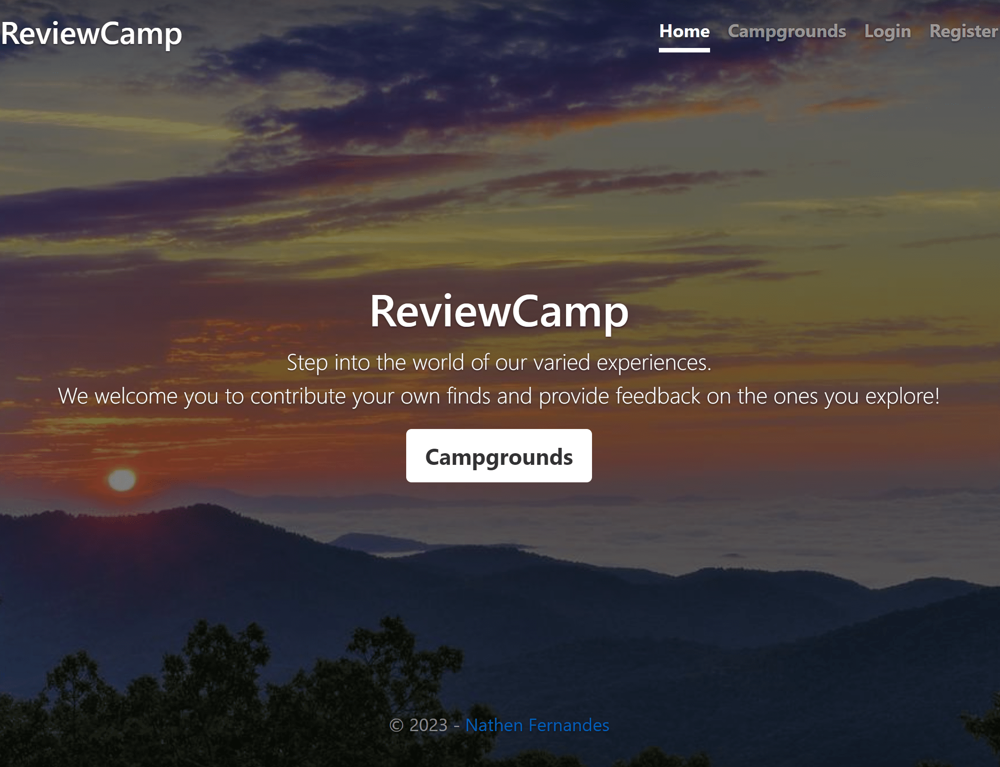
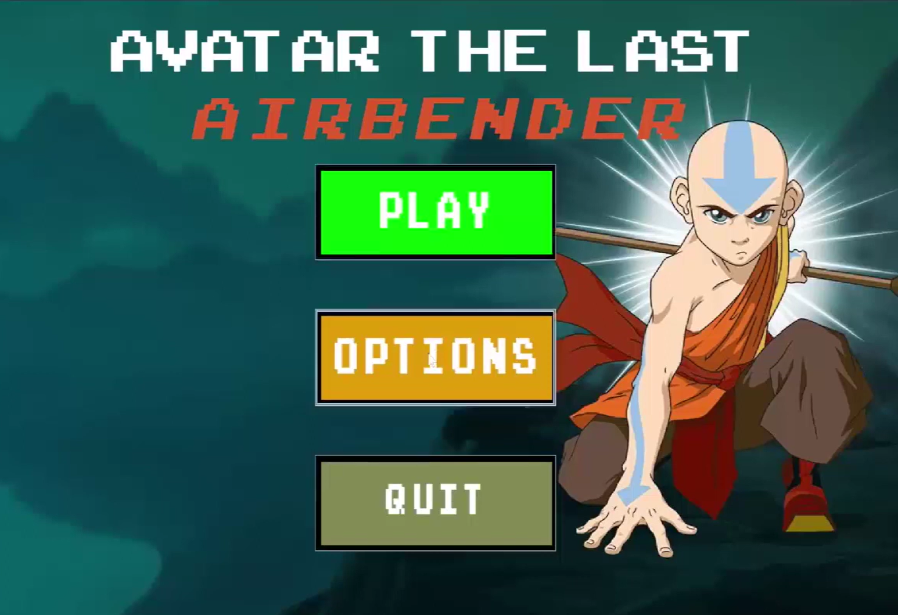
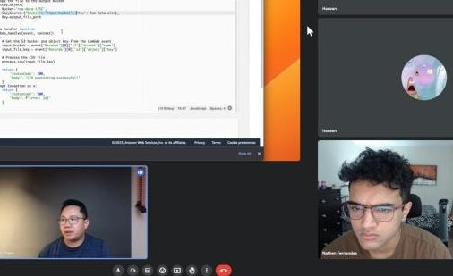
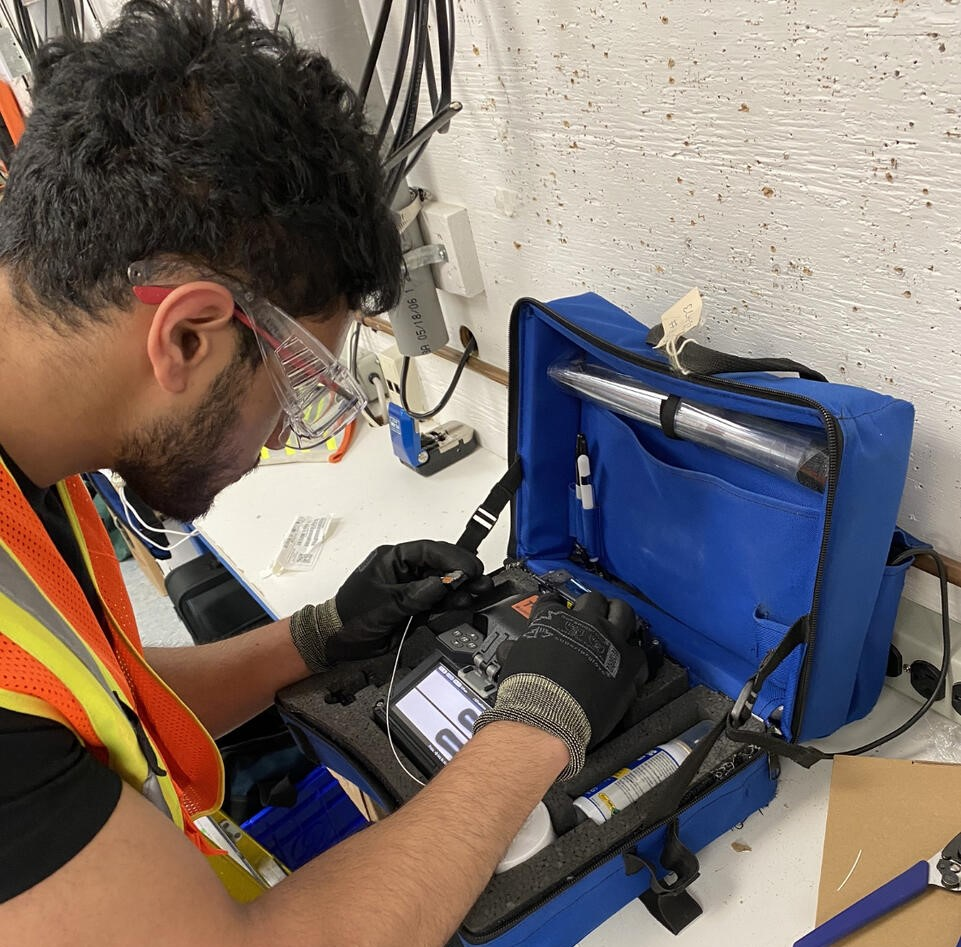

Computer Science Student at Western University
I am Nathen Fernandes, I am passionate about programming and discovering how software can have a positive impact on a global scale.
Contact Me Download ResumeMY PROJECTS

Full Stack Application
• Frontend: Utilized HTML, CSS, and Bootstrap for responsive web design.
• Backend: Implemented using Node.js and Express.js, with RESTful routing principles.
• Database: Integrated MongoDB for data storage, with Mongoose for schema-based data modeling.
• API Integration: Integrated Cloudinary API for image uploading and storage, and utilized Mapbox API for location-based features and interactive map visualizations.
View WebsiteNOTE: Server takes 45 seconds to boot upon inital request to the website.

Primate AI Classifier
Utilized the ResNet-18 architecture and fine-tuned it for the specific task.
Integrated CUDA for GPU acceleration ensuring efficient model training. Achieved an impressive classification of 99.2% accuracy on the test dataset.
Adopted the CrossEntropyLoss as the criterion and utilized the SGD optimizer with momentum.
Developed a Flask server to receive image uploads from the web application, process the image and return the predicted class along with the confidence score.
Code
JavaFX Animated Game
Dynamic UI: Leveraging JavaFX, the game interface offers fluid animations and intuitive player interactions along with attack and idle animations.
Modular Design: Embraced modular programming practices implementing multiple classes and enriching my knowledge on object oriented programming.
Efficient Algorithms: Implemented robust algorithms to handle complex game mechanics, ensuring quick response times and consistent gameplay.
CodeView Video
WORK EXPERIENCE

Software Engineer-Nymlogic
Leveraged Python’s robust libraries, including Pandas and NumPy, to intricately process, transform, and cleanse intricate datasets, ensuring the highest quality and readiness for business applications.
Assisted in the deployment and management of AWS Lambda functions, ensuring efficient and scalable solutions for client needs.
Skills Developed: AWS, Python, Pandas, Matplotlib

Field Technician-Bell Canada
Diagnosed and resolved complex technical issues with telecommunications equipment, applying a systematic approach
Assisted in setting up and configuring local area networks (LAN) and wide area networks (WAN), demonstrating a foundational understanding of network protocols and infrastructure.
Utilized specialized diagnostic software tools to identify and resolve customer service issues, introducing a hands-on approach to software applications in real-world scenarios.
Inventory Assistant-Western Technological Services
Spearheaded inventory control and coordinated service orders for the campus’s largest technological facility, ensuring fluid and error-free operations.
Demonstrated expertise in Microsoft Access, Excel, and Orbit databases. Utilized these platforms to vigilantly track, modify, and optimize inventory records, leading to marked enhancements in precision and operational efficiency.
Skills Developed: Microsoft Access, ER Diagrams, Excel